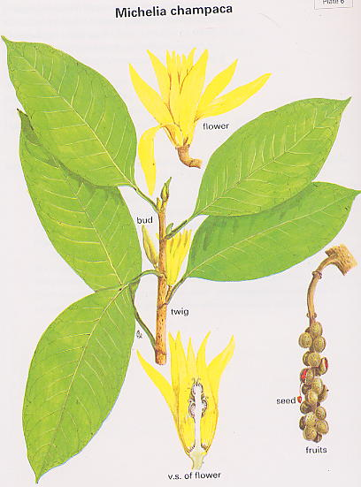

|
ECONOMICALLY
IMPORTANT PLANTS OF INDIA |
| Under-utilized Food and Fodder species and their wild relatives | Contributed by Ms.M.L Annapurna And Dr. Dhanapal, UAS, Bangalore |
Michelia champaca Linn.
----- Taxonomic Details

----- Correct Name
----- Classification
----- Synonyms
----- Common Names
Other Biological Details
----- Habit and Habitat
----- Diagnostic Features
----- Reproductive Biology
---------- Breeding System
---------- Phenology
---------- Pollinators
---------- Seed Biology
----------Seed Germination
------ Cultivation
----- Major Pests and Diseases
Economic Potential and Uses
----- Parts Used
----- Uses
----- Harvesting Practices
----- Produce and Products
----- Chemistry
----- Processing Techniques
----- Other uses
----- Economic Potential to the Country
----- Export Potential
Miscellaneous Information
Literature
HABIT & HABITAT:
This can be seen on Bunds, Cultivated
fields and Plains, Dry mixed forests, Evergreen forest, Forests, Gardens and
Roadsides, Hill forests, Midlands, Along Rivers and Streams, Moist forests,
Moist deciduous forest, Moist situations, Plains, Public and house gardens,
Shola and Temple gardens.
Biotic Zone: East sub-himalayan tracts, Eastern Himalayas, Eastern Sub-Himalayan
Tract, Konkan plain, Lower hills, Temperate Himalayas, West Coast and Western
Ghats.
Availability :
Misc: Anamalai, Bear`s Cave Garden, Shevroys, Biligiri rangan Hills,Canara,
Champbari, Coorg, Hanumanghat, Hatgad, Hollong, Jaldapara, Karjat, Kodaikanal,
Kollimalais, Kumaon, Kunjanagar, Mahaballeshwar, Manasagangotri, Melagiris,
Mysore, Naga hills, Nandi hills, Nepal to Arunachal pradesh, Pegu, Salkumar,
Servarayans, Shiradi Ghat, Tenasserim, Travancore, Trewin, Kodaikanal, Trimbak
and Village of Katraj ghats.
Country: Burma, E.Asia, India, Indo-china, Java, Malay Archipelago, Malaya,
Nepal, Pakistan, S.E.Asia and Siam.
Zone: Central, East, North, North East, South and Westzone.
State: Arunachal Pradesh, Assam, Bihar, Goa Daman Diu, Himachal Pradesh, Karnataka,
Kerala, Madhya Pradesh, Maharashtra, Rajasthan, Sikkim, Tamil Nadu, Uttar Pradesh
andn West Bengal.
District: Bangalore, Bombay, Calcutta, Champaran, Chamrajnagar, Chikmaglore,
Dharmapuri, Hassan, Hoshangabad, Jalpaiguri, Kameng, Kodagu, Kolar, Mysore,
Nagerhaveli, Nasik, Nilgiri, Pulney, Pune, Raigad, Salem, Satara, Shimoga, Simla,
Sindhudurg and Tiruchi.
Taluk: Chamarajinagar, Kudal and Wadgaon.
Latitude: 0-18,
Longitude: 0-73,
Altitude: 0-3000,
Rainfall : 0-2070,
Status :
DIAGNOSTIC FEATURES
It is a tall,handsome,evergreen tree.Crown tapering composed of ascending
branches,attaining a height of 35-40 m.Bark thick ashy-grey or
brownish,smooth.Leaves alternate,lanceolate,sometimes ovate,margin entire,shiny
and glabrous.Flowers bisexual,axillary,rarely terminal,solitary,aple yellow to
deep yellow,very fragrant.Fruits consists of long clusters of capsules on
a long spike,dark brown,splitting by two valves.
Breeding System :
Phenology:
The flowering generally
occurs through out the Year and in some places the flowering will be specifically
during April-September.
Pollinators: MAJOR PESTS & DISEASES
Seed Biology :
Seed Germination:
Cultivation:
It can be propogated by seeds.
Pests:
Diseases:
Economic
Potential and Uses
Parts used:
Stem and Flowers.
Flowers are used in renal diseases.
It is used in dyspepsia,nausea,fever.
Processing Techniques
Flora of Sindhudurg,Vol 1,Kulkarni. B. G. ,1988,BSI.